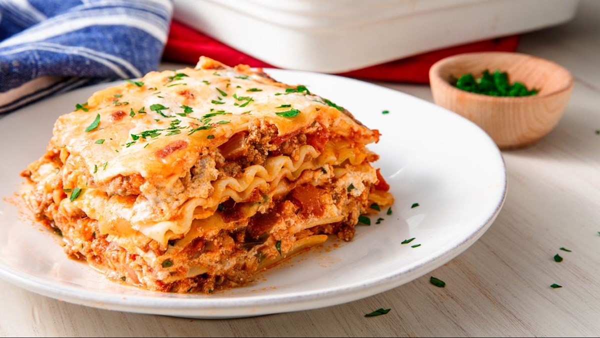

Chicken

This is a faster, and less expensive chicken.
This is a faster, and less expensive chicken.
This is a faster, and less expensive chicken.
Ingredients
- 1 (16 ounce) package chicken noodles
- 1 pound lean ground beef
- salt and pepper to taste
Steps
- Step 1: Bring a large pot of lightly salted water to a boil. Add pasta and cook for 8 to 10 minutes or until al dente; drain.
- Step 2: Preheat oven to 350 degrees F (175 degrees C). In a large skillet over medium-high heat, brown beef and season with salt and pepper; drain. Stir in spaghetti sauce and garlic and simmer 5 minutes.
- Step 3: In a medium bowl, combine mozzarella, Cheddar and ricotta; stir well. In 9x13 inch pan, alternate layers of noodles, meat mixture and cheese mixture until pan is filled.
- Step 4: Bake in preheated oven for 30 minutes, or until cheese is melted and bubbly.